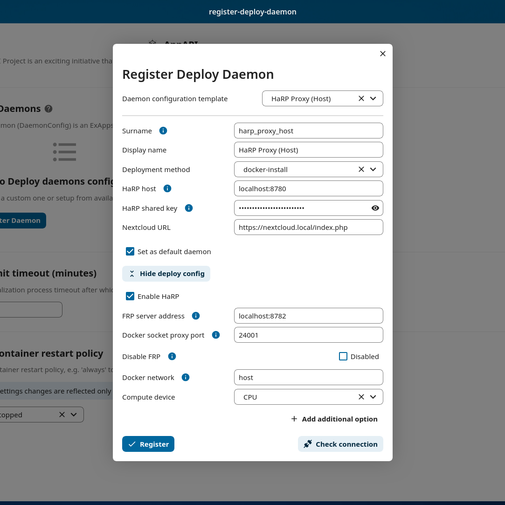

Deployment configurations
- Currently, two kinds of application deployments are supported:
Docker Deploy Daemon
Orchestrates the deployment of applications as Docker containers.
Warning
There are several Docker Daemon Deploy configurations (example schemes):
Nextcloud and Docker on the same host (via socket, DockerSocketProxy, or HaRP)
Nextcloud on the host and Docker on a remote host (via DockerSocketProxy with HTTPS, or HaRP)
Nextcloud and ExApps in the same Docker network (via DockerSocketProxy, or HaRP)
Nextcloud in AIO Docker and ExApps in the same Docker network (via AIO DockerSocketProxy or HaRP)
Docker Deploy Daemon (HaRP)
A little introduction to the default ports of the HaRP container is given below. More about it can be found in the HaRP’s readme.
Port
8780is the HTTP communication port used where Nextcloud connects to the HaRP container.Port
8781is the HTTPS communication port when setup.Port
8782is the FRP tunnel port used by ExApps to connect to the HaRP container.
In any of the cases, the following connections should succeed:
Nextcloud -> HaRP container (on port 8780/8781)
HaRP container -> Nextcloud (through proxy or directly as the NC_INSTANCE_URL env var dictates)
ExApp -> HaRP container (on port 8782)
ExApp -> Nextcloud (through proxy or directly as the
Nextcloud URLin the daemon config dictates)
Nextcloud and Docker on the same host - with Nextcloud bare metal
The simplest configuration is when Nextcloud is installed on the host and docker is on the same host and applications are deployed to it.
Create a HaRP container with either --network host option or expose the ports 8780 and 8782 to the host.
docker run \
-e HP_SHARED_KEY="some_very_secure_password" \
-e NC_INSTANCE_URL="https://127.0.0.1:8080" \
-v /var/run/docker.sock:/var/run/docker.sock \
-v `pwd`/certs:/certs \
--name appapi-harp -h appapi-harp \
--restart unless-stopped \
-p 8780:8780 \
-p 8782:8782 \
-d ghcr.io/nextcloud/nextcloud-appapi-harp:release
Go to AppAPI admin settings and register a HaRP Proxy (Host) daemon.
Finally, test the whole setup with “Test deploy” in the 3-dots menu of the deploy daemon.
Nextcloud and Docker on the same host - with Nextcloud in Docker
When Nextcloud is installed in Docker, the HaRP container can be created in the same docker network as the Nextcloud instance.
Create a HaRP container with --network <nextcloud_docker_network_name> option, where <nextcloud_docker_network_name> is the name of the Docker network in which Nextcloud is accessible.
docker run \
-e HP_SHARED_KEY="some_very_secure_password" \
-e NC_INSTANCE_URL="https://nextcloud.tld" \
-v /var/run/docker.sock:/var/run/docker.sock \
-v `pwd`/certs:/certs \
--name appapi-harp -h appapi-harp \
--restart unless-stopped \
--net <nextcloud_docker_network_name> \
-d ghcr.io/nextcloud/nextcloud-appapi-harp:release
Go to AppAPI admin settings and register a HaRP Proxy (Docker) daemon. Take note of the <nextcloud_docker_network_name> value in the Docker network field.
Finally, test the whole setup with “Test deploy” in the 3-dots menu of the deploy daemon.
Docker on a remote host - with HaRP container on the local host
This configuration is suited for deployments that want to offload the heavy lifting of the ExApps to a remote host, especially when using GPUs as compute devices. There can be multiple deploy daemons that can be used to deploy ExApps on different remote hosts for different compute capabilities. Here the HaRP container is deployed on the local host and the remote host tunnels the remote host’s docker socket to the local host over the FRP secure tunnel. The ExApps are deployed on the remote host. A setup with the HaRP container itself on the remote is not supported.
Create a HaRP container in the local host following the above examples but without the docker socket mount.
docker run \ -e HP_SHARED_KEY="some_very_secure_password" \ -e NC_INSTANCE_URL="https://127.0.0.1:8080" \ -v `pwd`/certs:/certs \ --name appapi-harp -h appapi-harp \ --restart unless-stopped \ -p 8780:8780 \ -p 8782:8782 \ -d ghcr.io/nextcloud/nextcloud-appapi-harp:release
Create a matching deploy daemon with
Docker socket proxy portset to24001.

The FRP generated client certificates should be present in the
certsfolder locally. Copy the filesclient.crt,client.keyandca.crtinside thecertsfolder to the remote host.Create a folder structure on the remote host:
mkdir -p certs/frpand copy the filesclient.crt,client.keyandca.crtto thecerts/frpfolder.Create a new file
frpc.tomlwith the following contents.# frpc.toml serverAddr = "your.harp.server.address" # Replace with your HP_FRP_ADDRESS host serverPort = 8782 # Default port for FRP or the port your reverse proxy listens on loginFailExit = false # If the FRP (HaRP) server is unavailable, continue trying to log in. transport.tls.certFile = "certs/frp/client.crt" transport.tls.keyFile = "certs/frp/client.key" transport.tls.trustedCaFile = "certs/frp/ca.crt" transport.tls.serverName = "harp.nc" # DO NOT CHANGE THIS VALUE metadatas.token = "some_very_secure_password" # HP_SHARED_KEY in quotes [[proxies]] remotePort = 24001 # Unique remotePort for each Docker Engine (range: 24001-24099) name = "deploy-daemon-1" # Unique name for each Docker Engine type = "tcp" [proxies.plugin] type = "unix_domain_socket" unixPath = "/var/run/docker.sock"
Make sure to replace theyour.harp.server.addresswith the actual address of the local host where the HaRP container is running.You might want to open the port8782on the local host firewall to allow the remote host to connect to it,or use a reverse proxy to forward the requests to the HaRP container. An example with nginx is given below. Feel free to adjust the port you want to listen on. The FRP client will connect to this port exposed port.With the reverse proxy config below, the whole setup would only need the main Nextcloud proxy to be exposed and reachable from the outside world, simplifying the network setup.stream { server { listen 8782; # Replace with the port you want to listen on proxy_pass 127.0.0.1:8782; proxy_protocol off; proxy_connect_timeout 10s; proxy_timeout 300s; } }
Download a release of the FRP client from the official releases or our snapshot from here.
Extract and copy the
frpcbinary to an appropriate location on the remote host, e.g./usr/local/bin.Make it executable:
chmod +x /usr/local/bin/frpc.Start the FRP client with the command:
frpc -c /path/to/frpc.toml.Finally, test the whole setup with “Test deploy” in the 3-dots menu of the deploy daemon.
Nextcloud in AIO and Docker on the same host
Nextcloud AIO (All-in-One) comes with a built-in HaRP container that can be used to deploy ExApps on the same host. Enabling the “HaRP” container should automatically create a Deploy Daemon and configure it to work out-of-the-box.
Just go to AppAPI admin settings and register a HaRP All-in-One daemon.
Finally, test the whole setup with “Test deploy” in the 3-dots menu of the deploy daemon.
Docker Deploy Daemon (Docker Socket Proxy)
NC & Docker on the Same-Host
The simplest configuration is when Nextcloud is installed on the host and Docker is on the same host and applications are deployed to it.
stateDiagram-v2
classDef docker fill: #1f97ee, color: white, font-size: 34px, stroke: #364c53, stroke-width: 1px, background: url(https://raw.githubusercontent.com/nextcloud/documentation/master/admin_manual/exapps_management/img/docker.png) no-repeat center center / contain
classDef nextcloud fill: #006aa3, color: white, font-size: 34px, stroke: #045987, stroke-width: 1px, background: url(https://raw.githubusercontent.com/nextcloud/documentation/master/admin_manual/exapps_management/img/nextcloud.svg) no-repeat center center / contain
classDef python fill: #1e415f, color: white, stroke: #364c53, stroke-width: 1px
Host
state Host {
Nextcloud --> Daemon : /var/run/docker.sock
Daemon --> Containers
state Containers {
ExApp1
--
ExApp2
--
ExApp3
}
}
class Nextcloud nextcloud
class Daemon docker
class ExApp1 python
class ExApp2 python
class ExApp3 python
- Suggested config values(template Custom default):
Daemon host:
/var/run/docker.sockHTTPS checkbox: not supported using docker socket
Network:
hostHaProxy password: not supported using raw docker socket, should be empty
—
Suggested way to communicate with Docker via Docker Socket Proxy container.
stateDiagram-v2
classDef docker fill: #1f97ee, color: white, font-size: 34px, stroke: #364c53, stroke-width: 1px, background: url(https://raw.githubusercontent.com/nextcloud/documentation/master/admin_manual/exapps_management/img/docker.png) no-repeat center center / contain
classDef nextcloud fill: #006aa3, color: white, font-size: 34px, stroke: #045987, stroke-width: 1px, background: url(https://raw.githubusercontent.com/nextcloud/documentation/master/admin_manual/exapps_management/img/nextcloud.svg) no-repeat center center / contain
classDef python fill: #1e415f, color: white, stroke: #364c53, stroke-width: 1px
Host
state Host {
Nextcloud --> DockerSocketProxy: by port
Docker --> Containers
Docker --> DockerSocketProxy : /var/run/docker.sock
state Containers {
DockerSocketProxy --> ExApp1
DockerSocketProxy --> ExApp2
DockerSocketProxy --> ExApp3
}
}
class Nextcloud nextcloud
class Docker docker
class ExApp1 python
class ExApp2 python
class ExApp3 python
- Suggested config values(template Docker Socket Proxy):
- Daemon host:
localhost:2375 - Choose A or B option:
Docker Socket Proxy should be deployed with
network=hostandBIND_ADDRESS=127.0.0.1Docker Socket Proxy should be deployed with
network=bridgeand it’s port should be published to host’s 127.0.0.1(e.g. -p 127.0.0.1:2375:2375)
- Daemon host:
HTTPS checkbox: disabled
Network:
hostHaProxy password: should not be empty
Warning
Be careful with option A, by default Docker Socket Proxy binds to * if BIND_ADDRESS is not specified during container creation.
Check opened ports after finishing configuration.
Docker on a remote host
Distributed configuration occurs when Nextcloud is installed on one host and Docker is located on a remote host, resulting in the deployment of applications on the remote host.
Benefit: no performance impact on Nextcloud host.
In this case, the AppAPI uses a Docker Socket Proxy deployed on remote host to access docker socket and ExApps.
stateDiagram-v2
classDef docker fill: #1f97ee, color: white, font-size: 34px, stroke: #364c53, stroke-width: 1px, background: url(https://raw.githubusercontent.com/nextcloud/documentation/master/admin_manual/exapps_management/img/docker.png) no-repeat center center / contain
classDef nextcloud fill: #006aa3, color: white, font-size: 34px, stroke: #045987, stroke-width: 1px, background: url(https://raw.githubusercontent.com/nextcloud/documentation/master/admin_manual/exapps_management/img/nextcloud.svg) no-repeat center center / contain
classDef python fill: #1e415f, color: white, stroke: #364c53, stroke-width: 1px
Direction LR
Host1 --> Host2 : by port
state Host1 {
Nextcloud
}
state Host2 {
[*] --> DockerSocketProxy : by port
Daemon --> Containers
state Containers {
[*] --> DockerSocketProxy : /var/run/docker.sock
DockerSocketProxy --> ExApp1
DockerSocketProxy --> ExApp2
DockerSocketProxy --> ExApp3
}
}
class Nextcloud nextcloud
class Daemon docker
class ExApp1 python
class ExApp2 python
class ExApp3 python
- Suggested config values(template Docker Socket Proxy):
Daemon host: ADDRESS_OF_REMOTE_MACHINE (e.g. server_name.com:2375)
HTTPS checkbox:
enabledNetwork:
hostHaProxy password: should not be empty
NC & ExApps in the same Docker
Applications are deployed in the same Docker where Nextcloud resides.
Suggested way to communicate with Docker: via docker-socket-proxy.
stateDiagram-v2
classDef docker fill: #1f97ee, color: white, font-size: 34px, stroke: #364c53, stroke-width: 1px, background: url(https://raw.githubusercontent.com/nextcloud/documentation/master/admin_manual/exapps_management/img/docker.png) no-repeat center center / contain
classDef nextcloud fill: #006aa3, color: white, font-size: 34px, stroke: #045987, stroke-width: 1px, background: url(https://raw.githubusercontent.com/nextcloud/documentation/master/admin_manual/exapps_management/img/nextcloud.svg) no-repeat center center / contain
classDef python fill: #1e415f, color: white, stroke: #364c53, stroke-width: 1px
Host
state Host {
Daemon --> Containers
state Containers {
[*] --> DockerSocketProxy : /var/run/docker.sock
Nextcloud --> DockerSocketProxy: by port
--
DockerSocketProxy --> ExApp1
DockerSocketProxy --> ExApp2
}
}
class Nextcloud nextcloud
class Daemon docker
class ExApp1 python
class ExApp2 python
class ExApp3 python
- Suggested config values(template Docker Socket Proxy):
Daemon host: nextcloud-appapi-dsp:2375
HTTPS checkbox:
disabledNetwork: user defined network
HaProxy password: should not be empty
Note
Network should not be the default docker’s bridge as it does not support DNS resolving by container names.
This means that Docker Socket Proxy, Nextcloud and ExApps containers should all be in the same docker network, different from the default bridge.
Nextcloud in Docker AIO (all-in-one)
In the case of AppAPI in Docker AIO setup (installed in Nextcloud container).
Note
AIO Docker Socket Proxy container must be enabled.
stateDiagram-v2
classDef docker fill: #1f97ee, color: white, font-size: 34px, stroke: #364c53, stroke-width: 1px, background: url(https://raw.githubusercontent.com/nextcloud/documentation/master/admin_manual/exapps_management/img/docker.png) no-repeat center center / contain
classDef docker2 fill: #1f97ee, color: white, font-size: 20px, stroke: #364c53, stroke-width: 1px, background: url(https://raw.githubusercontent.com/nextcloud/documentation/master/admin_manual/exapps_management/img/docker.png) no-repeat center center / contain
classDef nextcloud fill: #006aa3, color: white, font-size: 34px, stroke: #045987, stroke-width: 1px, background: url(https://raw.githubusercontent.com/nextcloud/documentation/master/admin_manual/exapps_management/img/nextcloud.svg) no-repeat center center / contain
classDef python fill: #1e415f, color: white, stroke: #364c53, stroke-width: 1px
Host
state Host {
Daemon --> Containers
state Containers {
[*] --> NextcloudAIOMasterContainer : /var/run/docker.sock
[*] --> DockerSocketProxy : /var/run/docker.sock
NextcloudAIOMasterContainer --> Nextcloud
AppAPI --> Nextcloud : installed in
Nextcloud --> DockerSocketProxy
DockerSocketProxy --> ExApp1
DockerSocketProxy --> ExApp2
DockerSocketProxy --> ExApp3
}
}
class Nextcloud nextcloud
class Daemon docker
class Daemon2 docker2
class ExApp1 python
class ExApp2 python
class ExApp3 python
AppAPI will automatically create the default DaemonConfig for AIO Docker Socket Proxy in order to use it as an orchestrator to create ExApp containers.
Note
Default DaemonConfig will be created only if the default DaemonConfig is not already registered.
Default AIO Deploy Daemon (Docker Socket Proxy)
Nextcloud AIO has a specifically created Docker Socket Proxy container to be used as the Deploy Daemon in AppAPI. It has fixed parameters:
Name:
docker_aioDisplay name:
AIO Docker Socket ProxyAccepts Deploy ID:
docker-installProtocol:
httpHost:
nextcloud-aio-docker-socket-proxy:2375Compute device:
CPUNetwork:
nextcloud-aioNextcloud URL (passed to ExApps):
https://$NC_DOMAIN
Docker Socket Proxy security
AIO Docker Socket Proxy has strictly limited access to the Docker APIs described in HAProxy configuration.
NC to ExApp Communication
Communications between Nextcloud and ExApps are done via the AppAPI. With Docker Socket Proxy, the requests are sent to the ExApp container directly. For HaRP, the communication goes through the main Nextcloud proxy and the HaRP container.
Each type of DeployDaemon necessarily implements the resolveExAppUrl function.
It has the prototype:
public function resolveExAppUrl(
string $appId, string $protocol, string $host, array $deployConfig, int $port, array &$auth
) {}
where:
protocol is daemon protocol value
host is daemon host value, can be DNS:port or IP:PORT or even path to docker socket.
port is an integer with ExApp port
deployConfig can be custom for each Daemon type
auth is an optional array, with Basic Authentication data if needed to access ExApp
Note
Applies only to Docker Socket Proxy.
The optional additional parameter OVERRIDE_APP_HOST can be used to override the host that will be used for ExApp binding.
It can be 0.0.0.0 in some specific configurations, when VPN is used
or both Nextcloud instance and ExApps are one the same physical machine but different virtual environments.
Also you can specify something like 10.10.2.5 and in this case ExApp will try to bind to that address and
AppAPI will try to send request s directly to this address assuming that ExApp itself bound on it.
The simplest implementation is in the Manual-Install deploy type:
public function resolveExAppUrl(
string $appId, string $protocol, string $host, array $deployConfig, int $port, array &$auth
): string {
if (boolval($deployConfig['harp'] ?? false)) {
$url = rtrim($deployConfig['nextcloud_url'], '/');
if (str_ends_with($url, '/index.php')) {
$url = substr($url, 0, -10);
}
return sprintf('%s/exapps/%s', $url, $appId);
}
$auth = [];
if (isset($deployConfig['additional_options']['OVERRIDE_APP_HOST']) &&
$deployConfig['additional_options']['OVERRIDE_APP_HOST'] !== ''
) {
$wideNetworkAddresses = ['0.0.0.0', '127.0.0.1', '::', '::1'];
if (!in_array($deployConfig['additional_options']['OVERRIDE_APP_HOST'], $wideNetworkAddresses)) {
$host = $deployConfig['additional_options']['OVERRIDE_APP_HOST'];
}
}
return sprintf('%s://%s:%s', $protocol, $host, $port);
}
http(s)://nextcloud.example.tld/exapps/ route for manual deployments using the HaRP proxy. http(s)://nextcloud.example.tld is the Nextcloud URL specified in the daemon config. Take care to configure the /exapps/ route in your reverse proxy accordingly if your Nextcloud instance is on a subpath https://nextcloud.example.tld/nextcloud. See Configuring Your Reverse Proxy in the HaRP readme for examples.Now, let’s take a look at the Docker Daemon implementation of resolveExAppUrl:
public function resolveExAppUrl(
string $appId, string $protocol, string $host, array $deployConfig, int $port, array &$auth
): string {
if (boolval($deployConfig['harp'] ?? false)) {
$url = rtrim($deployConfig['nextcloud_url'], '/');
if (str_ends_with($url, '/index.php')) {
$url = substr($url, 0, -10);
}
return sprintf('%s/exapps/%s', $url, $appId);
}
$auth = [];
if (isset($deployConfig['additional_options']['OVERRIDE_APP_HOST']) &&
$deployConfig['additional_options']['OVERRIDE_APP_HOST'] !== ''
) {
$wideNetworkAddresses = ['0.0.0.0', '127.0.0.1', '::', '::1'];
if (!in_array($deployConfig['additional_options']['OVERRIDE_APP_HOST'], $wideNetworkAddresses)) {
return sprintf(
'%s://%s:%s', $protocol, $deployConfig['additional_options']['OVERRIDE_APP_HOST'], $port
);
}
}
$host = explode(':', $host)[0];
if ($protocol == 'https') {
$exAppHost = $host;
} elseif (isset($deployConfig['net']) && $deployConfig['net'] === 'host') {
$exAppHost = 'localhost';
} else {
$exAppHost = $appId;
}
if ($protocol == 'https' && isset($deployConfig['haproxy_password']) && $deployConfig['haproxy_password'] !== '') {
// we only set haproxy auth for remote installations, when all requests come through HaProxy.
$haproxyPass = $this->crypto->decrypt($deployConfig['haproxy_password']);
$auth = [self::APP_API_HAPROXY_USER, $haproxyPass];
}
return sprintf('%s://%s:%s', $protocol, $exAppHost, $port);
}
The route for HaRP setups remain the same here as in the previous example. All the requests are sent to the Nextcloud URL with the /exapps/ route.
For Docker Socket Proxy, however, we have much more complex algorithm of detecting to where requests should be send.
First of all, if the protocol is set to https, AppAPI always sends requests to the daemon host,
and in this case, it is a HaProxy that will forward requests to ExApps that will be listening on localhost.
Briefly, it will look like this (haproxy_host==daemon host value):
NC –> https –> haproxy_host:ex_app_port –> http –> localhost:ex_app_port
When the protocol is not https but http, then what will be the endpoint where to send requests is determined by $deployConfig['net'] value.
If net is defined and equal to host, then AppAPI assumes that ExApp is installed somewhere in the current host network and will be available on localhost loop-back adapter.
NC –> http –> localhost:ex_app_port
In all other cases, the ExApp should be available by it’s name: e.g. when using docker custom bridge network all containers available by DNS.
NC –> http –> app_container_name:ex_app_port
These three different types of communication cover most popular configurations.